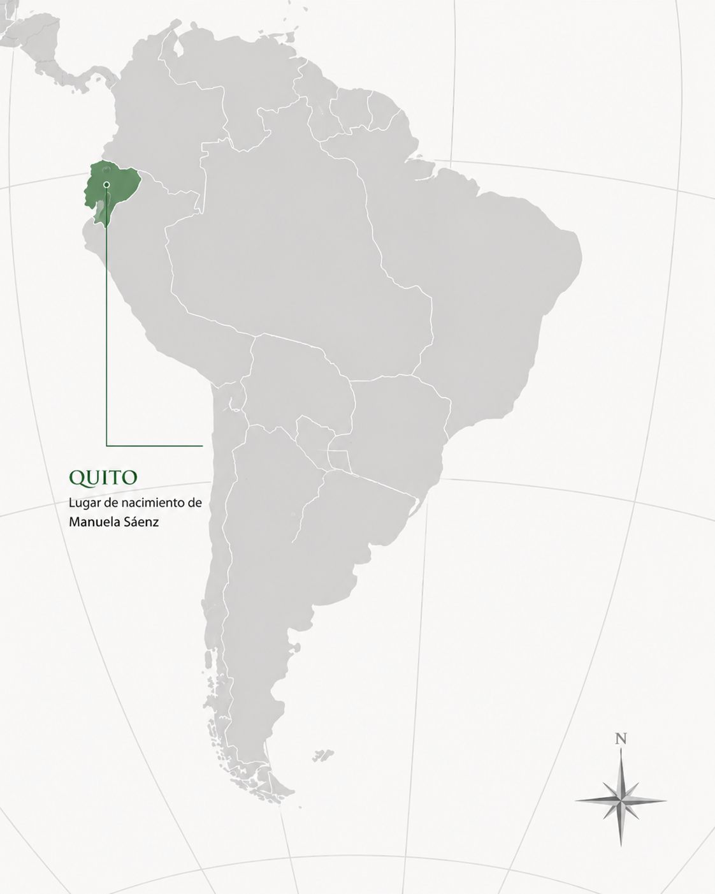

Manuela Sáenz
Quito, 27 de diciembre de 1797 – Paita, 23 de noviembre de 1856
Revolucionaria quiteña que colaboró con inteligencia, mensajería y organización política en las campañas vinculadas a Simón Bolívar, y salvó su vida durante un atentado en 1828.
← Volver a Heroínas
Presentación
Manuela Sáenz nació en Quito en 1797 y se convirtió en una de las figuras más singulares de la independencia sudamericana. Actuó principalmente en los territorios que hoy integran Ecuador, Perú y Colombia, donde desempeñó un papel clave como colaboradora política y militar de los ejércitos patriotas: organizó redes de información, participó en la vida política de la naciente Gran Colombia y sostuvo un compromiso público con la causa independentista poco habitual para una mujer de su época. Es recordada como una figura central de la independencia sudamericana por su valentía, su inteligencia política y, sobre todo, por el episodio que la hizo célebre: haber salvado la vida de Simón Bolívar.

Logros destacados
Salvó la vida de Bolívar
En 1828 impidió un atentado contra Simón Bolívar en Bogotá, actuando con rapidez y determinación.
"La Libertadora del Libertador"
Por ese episodio fue reconocida con este título, que resume su lugar en la memoria histórica.
Redes de inteligencia
Participó en tareas de espionaje, mensajería e inteligencia para las fuerzas patriotas.
Figura continental
Su actuación política y militar la convirtió en una de las mujeres más recordadas del proceso emancipador sudamericano.
Su aporte a la independencia argentina y sudamericana
Las luchas independentistas de América del Sur estuvieron conectadas entre sí. Aunque algunas de estas mujeres no actuaron directamente en el actual territorio argentino, sus acciones contribuyeron a debilitar el dominio español y a fortalecer la emancipación del continente. De esta manera, también favorecieron, directa o indirectamente, la consolidación de la independencia argentina.
Aporte regional e indirecto- Participó en campañas libertadoras vinculadas con Simón Bolívar.
- Colaboró mediante inteligencia, mensajería y organización.
- Su actuación contribuyó a consolidar la emancipación de Ecuador, Perú y la Gran Colombia.
- La derrota del dominio español en esos territorios fortaleció el proceso continental del que también formó parte la independencia argentina.
- Su aporte se presenta como regional e indirecto, y no como participación directa en territorio argentino.
Ideas
Los principios que guiaron su compromiso con la causa independentista:
- Defendió la libertad y la independencia de los pueblos sudamericanos.
- Apoyó el proyecto de unión de las nuevas naciones americanas.
- Consideraba que las mujeres debían participar activamente en la política y en la defensa de la patria.
Acciones
Lo que hizo, concretamente, en el terreno político y militar:
- Colaboró como mensajera, informante y espía.
- Participó en la organización de fuerzas patriotas.
- Apoyó las campañas independentistas vinculadas a Simón Bolívar.
- Salvó la vida de Bolívar durante un atentado ocurrido en 1828.
Legado
Cómo es recordada y por qué continúa siendo una figura fundamental:
- Es considerada una de las principales heroínas de la independencia latinoamericana.
- Fue conocida como "La Libertadora del Libertador".
- Representa la participación política y militar de las mujeres en los procesos revolucionarios.
Línea de tiempo de Manuela Sáenz
-
1797
Nacimiento. Nace en Quito, actual Ecuador.
-
1822
Compromiso con la causa. Se involucra activamente en la causa independentista y conoce a Simón Bolívar.
-
1824
Campañas finales. Colabora en la organización y el archivo de las campañas libertadoras sudamericanas.
-
1828
Salva a Bolívar. Impide un atentado contra Simón Bolívar en Bogotá.
-
1830
Tras la muerte de Bolívar. Es desplazada de la vida pública y política.
-
1856
Muerte. Fallece en el exilio, en Paita, Perú.
Su compromiso con la libertad superó los límites impuestos a las mujeres de su época.